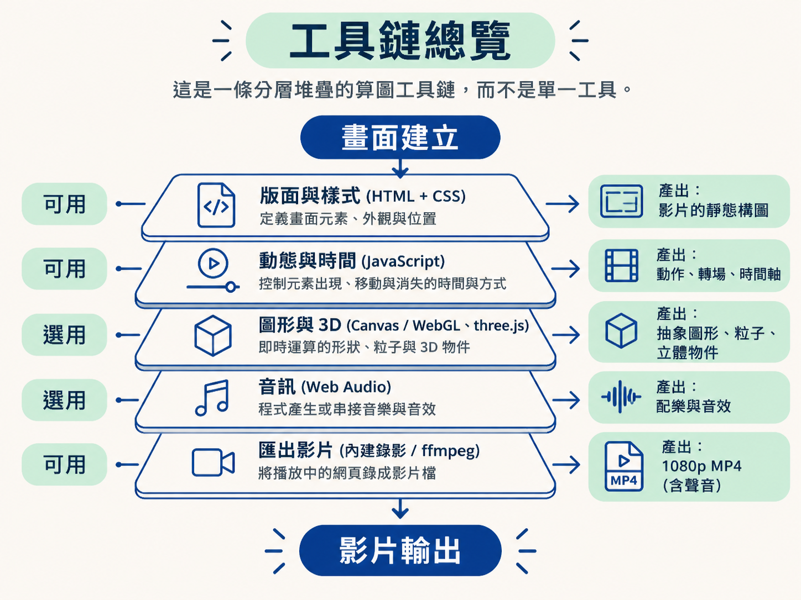
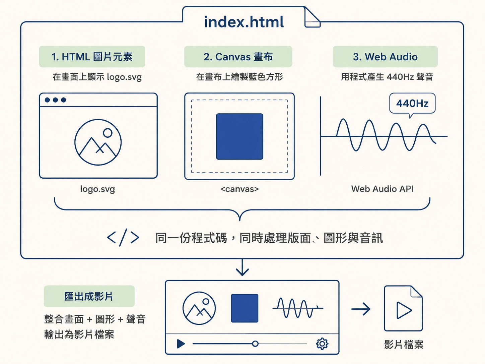

算圖工具鏈：agent 以 HTML、CSS、JavaScript 等程式逐層建立畫面，再將播放中的網頁匯出成影片檔。
這條工具鏈位在「畫面建立」到「影片輸出」之間。查閱各層的工具與角色，可以對照畫面、動態、圖形、音訊與匯出問題分別屬於哪個部分。
| 層 | 工具 | 負責內容 | 產出 | 使用狀態 |
|---|---|---|---|---|
| 版面與樣式 | HTML + CSS | 畫面元素、外觀與位置 | 影片的靜態構圖 | 可用 |
| 動態與時間 | JavaScript | 元素出現、移動與消失的時間與方式 | 動作、轉場、時間軸 | 可用 |
| 圖形與 3D | Canvas / WebGL（three.js） | 即時運算的形狀、粒子與 3D 物件 | 抽象圖形、粒子、立體物件 | 選用 |
| 音訊 | Web Audio | 程式產生或串接音樂與音效 | 配樂與音效 | 選用 |
| 匯出影片 | 內建錄影 / ffmpeg 腳本 | 將播放中的網頁錄成影片檔 | 1080p MP4（含聲音） | 可用 |
| 渲染引擎 | HyperFrames | 將 HTML 元素轉成影片，並支援疊加與調色 | 最終影片（HTML 進、MP4 出） | 選用 |

HTML提供文字、圖片與容器等畫面元素；CSS決定元素的外觀與位置。這一層定義影片的靜態構圖，也就是畫面暫停在某一格時所呈現的排版。
JavaScript指定元素在第幾秒出現、移動或消失，以及進場與退場的方式。動作、轉場與整體節奏由這一層定義。
Canvas與WebGL用於繪製需要即時運算的圖形，例如持續變化的抽象線條、粒子效果與旋轉中的 3D 物件。
three.js是 WebGL 上常見的函式庫，用於以較高階的方式描述 3D 場景。這一層為選用項目；平面文字與圖片組成的影片可以不使用它。
Web Audio可在程式中生成音樂與音效，也可串接現成的音訊檔。這一層的產出是影片的聲音軌，屬於選用項目。
播放中的網頁可使用瀏覽器內建錄影功能，或透過 ffmpeg 腳本匯出成影片檔。
ffmpeg 是存在二十多年的影音工具，可將算好的網頁轉成 1080p MP4。
HyperFrames是為 agent 設計的開源渲染引擎，將 HTML 元素轉成影片，並支援 HTML 元素疊加、動畫執行與調色。
HyperFrames 的輸入是 HTML，輸出是 MP4。它是選用的渲染路徑；HTML、CSS、JavaScript、圖形工具與影片匯出工具也可以分別使用。
工具鏈中的項目不代表每次都會全部使用。曾有實測刻意不使用 HyperFrames 或 Remotion；這兩者是專門給 Claude 做影片的熱門開源函式庫。這個測試只使用原生能力，包括 HTML、CSS、JavaScript、three.js 與 ffmpeg，完成影片製作。
同一項測試未使用 After Effects 或 Premiere 等傳統剪輯軟體。
| 項目 | 狀態 |
|---|---|
| HTML、CSS、JavaScript | 原生能力，可用於建立網頁畫面與動態 |
| three.js | 原生能力，可用於 3D 圖形 |
| ffmpeg | 原生能力，可用於影片匯出 |
| HyperFrames | 選用的開源渲染引擎 |
| Remotion | 可不使用的開源函式庫 |
| After Effects、Premiere | 這次實測沒用到 |
算圖工具鏈描述的是可動用的處理層，不是固定的完整組合。固定的處理方式是以程式碼逐層建立畫面。
以下範例將三層放在同一個 HTML 檔中：HTML 圖片、Canvas 畫布，以及 Web Audio 音訊。這是結構示意，不是任何真實影片的原始碼。
<!-- 版面與樣式：HTML + CSS -->
<img id="logo" src="logo.svg">
<canvas id="stage" width="1920" height="1080"></canvas>
<script>
// 圖形與 3D：取得畫布的 2D 繪圖環境
const ctx = document.getElementById("stage").getContext("2d");
ctx.fillStyle = "#2563eb";
ctx.fillRect(100, 100, 200, 200);
// 音訊：用程式產生一段聲音
const audio = new AudioContext();
const osc = audio.createOscillator();
osc.frequency.value = 440;
osc.connect(audio.destination);
osc.start();
</script>
| 問題 | 對應層 |
|---|---|
| 排版、字體或位置不正確 | HTML + CSS |
| 元素出現的時機或移動路徑不正確 | JavaScript |
| 形狀或 3D 物件繪製不正確 | Canvas / WebGL（three.js） |
| 聲音不正確 | Web Audio |
| 檔案無法匯出、畫質或格數不正確 | ffmpeg / HyperFrames |
下一個查閱項目是工作區中的實際檔案與素材：程式碼執行後，會留下哪些檔案。